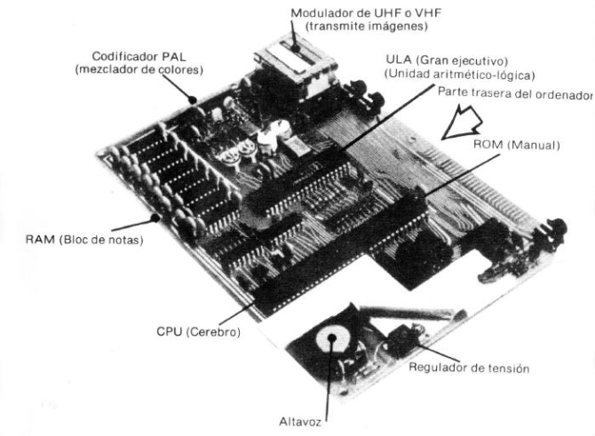

Manual de Introducción Spectrum 48k. |
9. ¿Cómo es el interior del ZX SpectrumEn la ilustración adjunta se muestra cómo es "por dentro" el ZX Spectrum. 
Figura 10
Como puede observar, todo, o casi todo, se nombra por una abreviatura de tres letras. Los elementos rectangulares negros de plástico, con patillas metálicas, son los circuitos integrados que realmente hacen todo el trabajo. En el interior de cada uno hay un elemento cuadrado de 1/4 x 1/4 pulgadas de silicio unido por hilos de conexión a las patillas metálicas. En esa pastilla de silicio hay miles de transistores que constituyen los circuitos electrónicos que son el ordenador. El cerebro que hay detrás de todo este complejo es la pastilla integrada del procesador, que suele denominarse la CPU (Unidad Central de Proceso). En este caso particular se llama Z80A, que es una versión más rápida del popular Z80. El procesador controla el ordenador, realiza los cálculos aritméticos, examina qué teclas se han pulsado, decide lo que hay que hacer como consecuencia y, en general, decide lo que el ordenador debe realizar en cada momento. Sin embargo, a pesar de su inteligencia, no podría hacer todo lo anterior por su propia cuenta. No sabe nada acerca del BASIC, ni sobre la aritmética de coma decimal, por ejemplo, y ha de obtener todas las instrucciones de otra pastilla integrada, la ROM (memoria de solo lectura). La ROM contiene una larga lista de instrucciones que forman un programa de ordenador y que comunica al procesador lo que ha de hacer en todas las circunstancias previsibles. Este programa está escrito no en BASIC sino en lo que se denomina código-máquina del Z80 y adopta la forma de una larga secuencia de números. Hay, en total, 16384 (16 * 1024) y esta es la razón de que al BASIC del ZX Spectrum se le denomina, a veces, un 16K BASIC (1K equivale a 1024). Aunque hay pastillas integradas similares en otros ordenadores, esta secuencia particular de instrucciones es exclusiva para el ZX Spectrum y se escribió especialmente para el mismo. Las ocho pastillas integradas próximas a ella son para la memoria. Esta es RAM (memoria de acceso aleatorio) y hay otras dos pastillas que actúan de forma muy vinculada a las anteriores. LA RAM es en donde el ordenador almacena la información que precisa conservar, algunos programas en BASIC, las variables, la imagen para la pantalla de televisión y diversos otros elementos que mantienen el registro del estado del ordenador. La pastilla grande es la SCL (Lógica Ordenador Sinclair). Actúa realmente como el "centro de comunicaciones", que se cerciora de que todo lo que requiere el procesador se realiza oportunamente. Asimismo, lee la memoria para ver de qué consta la imagen de televisión y envía las señales adecuadas al dispositivo de interconexión ("interface") de TV. El codificador PAL es un grupo completo de componentes que convierte la salida de televisión de la pastilla integrada de lógica en una forma apropiada para las televisiones en color. El regulador convierte la tensión algo errática de la fuente de alimentación en una tensión de 5 voltios absolutamente constante. Con esto concluimos este manual de introducción. Si considera que lo ha comprendido bien, le recomendamos que pase a la lectura del manual de programación en BASIC. |
Manual de Introducción Spectrum 48k. |